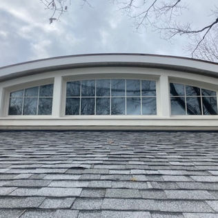
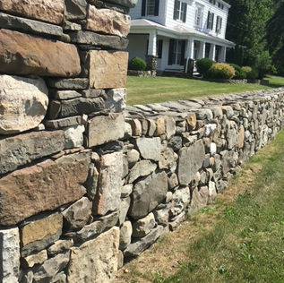
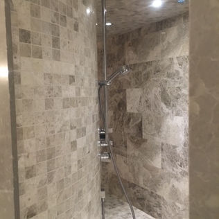
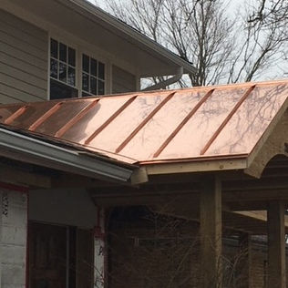
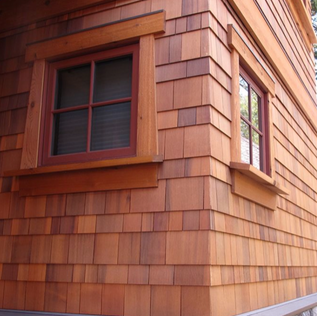
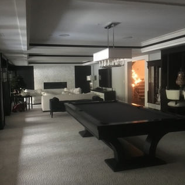
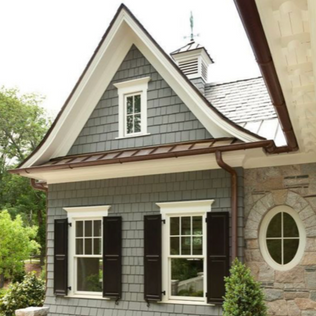
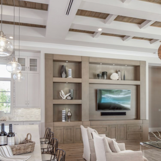
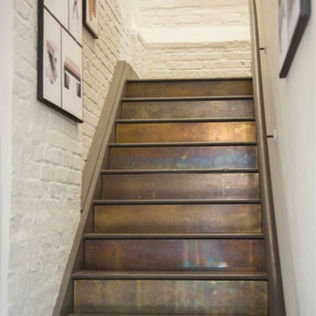

Our Renovation Projects

Interior FinishesConsidered details and a cohesive finish throughout the living space.

Custom RenovationMaterials, craftsmanship, and a tailored approach to the home.

Kitchen & LivingFunctional spaces with refined finishes and thoughtful planning.

Architectural DetailsDesign elements that give a room depth and character.

Exterior ImprovementsA refreshed exterior that complements the existing architecture.

Custom MillworkBuilt-in details that combine practical storage with visual impact.

Exterior RenovationA coordinated approach to exterior materials and finishes.

Ceilings & CabinetryIntegrated architectural detailing and built-in cabinetry.

Staircase DesignA distinctive staircase with clean lines and material contrast.
Let's Discuss Your Next Project
Call or text: 905.208.0552